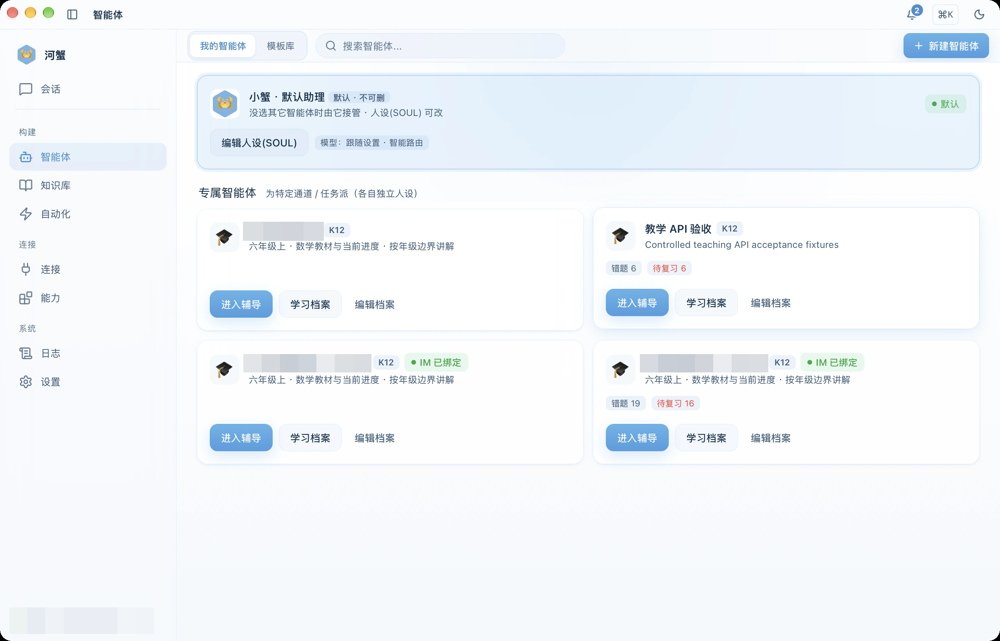
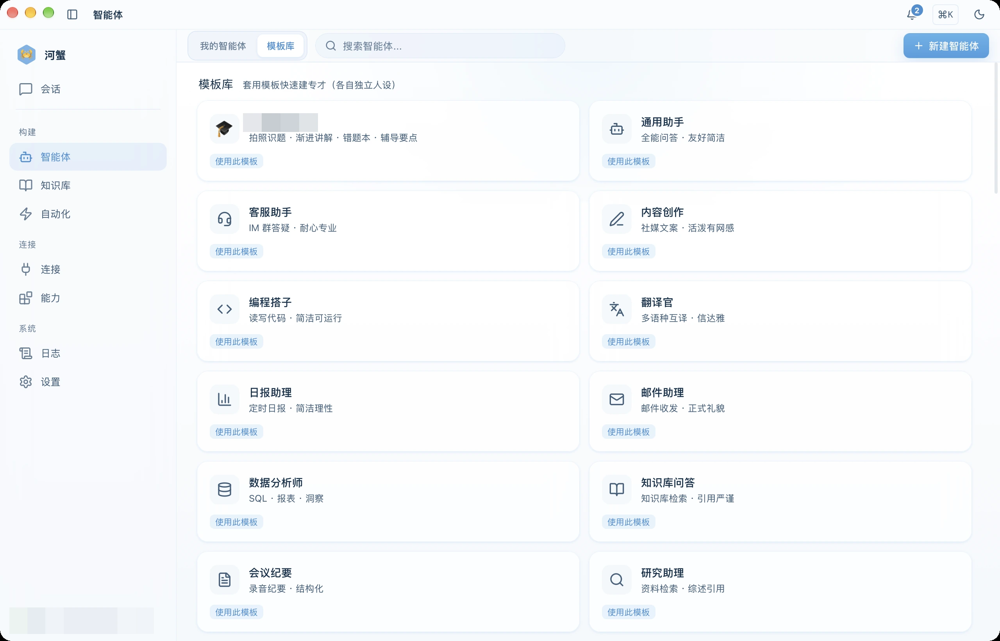

Agent باشقۇرۇش
AI روللىرى، مودېل، كۆرسەتمە، قورال ۋە Skill نى باشقۇرۇش، ئىش ئېقىمىدا Agent لارنى بىرلەشتۈرۈش.
Agent دېگەن نېمە؟
Agent مەلۇم رول، نىشان، مودېل ۋە ئىشلىتىشكە بولىدىغان قوراللارنى ئۆز ئىچىگە ئالغان AI خىزمەت بىرلىكى. ئۇ ۋەزىپىنى پىلانلاپ، لازىم بولغان قورالنى چاقىرىپ، نەتىجىنى قايتۇرىدۇ.

رول قۇرۇش
- يان بالداقتىكى Agent بېتىنى ئېچىپ يېڭى Agent نى چېكىڭ.
- بوش Agent دىن باشلاڭ ياكى قېلىپ ئامبىرى دىن بىر قېلىپ تاللاڭ.
- ئىچكى بەلگە، كۆرسىتىش نامى ۋە رول تەڭشىكىنى（SOUL / system prompt）تولدۇرۇپ، قېلىپنى ئېھتىياجىڭىزغا ئاساسەن تەڭشەڭ.
- ئىختىيارىي ھالدا مودېل ۋە ئالىي تەڭشەكتىن تەمىنلىگۈچى، مودېل، تەپەككۇر، temperature، قورال ۋە Skill نى تاللاڭ. مودېل كۆڭۈلدىكى سەپلىمىگە ئەگىشىۋالسىمۇ بولىدۇ.
- قۇرۇپ سۆھبەت باشلاش نى چېكىڭ ياكى ئاۋۋال ساقلاپ، كېيىن كارتىدىن سۆھبەتكە كىرىڭ.
بار Agent نى كارتىدىن تەھرىرلىيەلەيسىز. ئادەتتىكى خاس Agent نى ئۆچۈرۈش كىرىش ئېغىزى بار؛ تاپشۇرۇق ياردەمچىسى قاتارلىق مەخسۇس سىنارىيە Agent لىرى ئارخىپ تەھرىرلەش كىرىش ئېغىزىدىن باشقۇرۇلىدۇ. كۆڭۈلدىكى ياردەمچى ساقلىنىدۇ.

Agent بىلەن سۆھبەتلىشىش
Agent → مېنىڭ Agent لىرىم دىن كارتىدىكى سۆھبەتكە كىرىش نى چېكىڭ. كىرگۈزۈش رامكىسىدا @ يېزىپ سەپلەنگەن Agent نىمۇ تاللىيالايسىز. كېيىنكى ئۇچۇرلار نۆۋەتتىكى سۆھبەتكە باغلانغان Agent نىڭ رولى، قوراللىرى ۋە Skill سەپلىمىسى بىلەن بىر تەرەپ قىلىنىدۇ.
سۆھبەتتە بىرلا كىرگۈزۈش رامكىسى ئىشلىتىلىدۇ؛ Chat، Agent ۋە چوڭقۇر تەپەككۇر ئارىسىدا ئايرىم ھالەت ئالماشتۇرۇش ھاجەتسىز. مودېل تاللاش ۋە تەپەككۇر تەڭشىكى رامكىنىڭ ئىچىدىكى ئاستىنقى قورال بالداقتا. تاللانمىلار نۆۋەتتىكى مودېلنىڭ ئىقتىدارىغا باغلىق: مودېل ئۆزى باشقۇرۇشى، ئېچىش-تاقاش ياكى كۈچلۈكلۈك تاللىشى بولۇشى مۇمكىن.
كارتىدىن كىرگەندە ماس كېلىدىغان سۆھبەت بولسا شۇنى داۋاملاشتۇرىدۇ؛ بولمىسا رولنىڭ كۆرسىتىش نامى بىلەن يېڭى سۆھبەت قۇرىدۇ. شۇ Agent قا باغلانغان ھالدا ئوخشاش رامكىدىن ئۇچۇر ئەۋەتىسىز.
مودېل باغلاش
- كۆڭۈلدىكى مودېلغا ئەگىشىش: تەمىنلىگۈچى ۋە مودېلنى بىرلىكتە بوش قالدۇرۇڭ.
- مەخسۇس مودېل: تەمىنلىگۈچى بىلەن شۇ تەمىنلىگۈچىنىڭ مودېلىنى بىرلىكتە تاللاڭ.
- باغلىنىشنى ئۆزگەرتىش: كارتىدىكى تەھرىرلەشتىن تەڭشەڭ؛ ئىككىسىنى بوشاتسىڭىز كۆڭۈلدىكى مودېلغا قايتىدۇ.
تەمىنلىگۈچى بىلەن مودېلنىڭ پەقەت بىرىنىلا تولدۇرماڭ. Temperature نى 0 دىن 2 گىچە تەڭشەشكە ياكى بوش قالدۇرۇپ كۆڭۈلدىكى سەپلىمىگە ئەگىشىشكە بولىدۇ. تەپەككۇر ئىستراتېگىيەسى reasoning_policy ئارقىلىق مودېل قوللايدىغان ئېچىش-تاقاش ۋە كۈچلۈكلۈك تاللانمىلىرىنى ئىشلىتىدۇ.
قورال ۋە Skill
Agent قا ھۆججەت، تور، MCP، كود ئىجرا قىلىش ياكى خاس Skill ھوقۇقى بېرىشكە بولىدۇ. ھوقۇقنى ۋەزىپىگە لازىم بولغان دائىرە بىلەن چەكلەش بىخەتەرلىك ئۈچۈن ياخشى.
ئىش ئېقىمىدا Agent لارنى بىرلەشتۈرۈش
تەتقىقات، تەھلىل ۋە تەكشۈرۈشنى ئوخشىمىغان روللارغا تاپشۇرۇش ئۈچۈن ئىش ئېقىمى تاختىسىدىكى تۈگۈنلەرگە Agent بەلگىلەڭ. ھەر باسقۇچنىڭ كىرگۈزۈشى، چىقىرىشى ۋە ئىجرا تەرتىپىنى ئېنىقلاپ، ئەمەلىي نەتىجىسىنى كۆرۈڭ.
دەسلەپكى Agent سەپلىمىسى
ئۆزىڭىز باشقۇرىدىغان مۇلازىمەتتە hexclaw.yaml نىڭ router.agents بۆلىكى ئارقىلىق دەسلەپكى Agent نى بەلگىلىيەلەيسىز. بۇ مىسال مۇلازىمەتنىڭ كۆڭۈلدىكى مودېلىغا ئەگىشىدۇ:
router:
enabled: true
default_agent: researcher
agents:
- name: researcher
display_name: تەتقىقات ياردەمچىسى
description: ماتېرىيالنى مەنبەسى بىلەن رەتلەش
system_prompt: |-
ماتېرىياللارنى رەتلەپ، قاراشلارنى سېلىشتۇرۇپ دوكلات تەييارلا.
ئەمەلىي ئېلىنغان مەنبەنى كۆرسەت، دەلىللەنمىگەن ئۇچۇرنى ئېنىق بەلگىلە.
skills: []بۇ سەپلىمە سانداندا Agent يوق ۋاقىتتىكى دەسلەپكى قۇرۇشقا ئىشلىتىلىدۇ؛ ساقلانغان Agent نى قاپلىمايدۇ. كېيىنكى ئۆزگەرتىش ئۈچۈن كارتىدىكى تەھرىرلەش ياكى Agent API نى ئىشلىتىڭ. API ھۆججىتى main كودىغا ماس كېلىدۇ؛ قاچىلانغان مۇلازىمەت نەشرىنى ئايرىم تەكشۈرۈڭ.
ياخشى Prompt يېزىش
- رول ۋە مەسئۇلىيەتنى ئېنىق يېزىڭ.
- چىقىرىش فورماتىنى كۆرسىتىڭ.
- قورال ئىشلىتىش چەك-چېگرىسىنى ئايرىپ بېرىڭ.
- خاتالىق كۆرۈلسە قانداق قايتا سىناشنى بايان قىلىڭ.